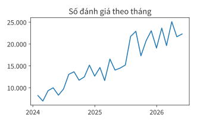
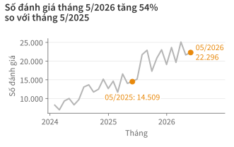
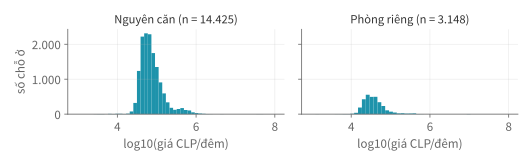

Học kì 1, năm học 2026–2027
Viện Trí tuệ nhân tạo, Trường ĐH Công nghệ, ĐHQGHN
Trình bày kết quả phân tích cho người đọc và thẩm định (audit) một báo cáo do AI viết.
Ở Bài 12–13, bạn đã vẽ biểu đồ và học năm điểm kiểm tra một hình. Bài này đi từ biểu đồ đến báo cáo, rồi thẩm định một báo cáo do AI viết.
Xác định người đọc và điều họ cần biết trước khi viết.
| Khám phá | Trình bày | |
|---|---|---|
| Người đọc | chính bạn | người khác |
| Số hình | nhiều, thử nhiều cách | vài hình, chọn lọc |
| Tiêu đề hình | gọi tên biểu đồ | nêu kết luận |
| Mục tiêu | tìm điều đáng nói | giúp người đọc quyết định |
| Người đọc | Cần quyết định | Cần thấy |
|---|---|---|
| Chủ nhà mới ở Santiago | đặt giá bao nhiêu | giá trung vị theo quận, loại phòng |
| Sở du lịch thành phố | có cần quản lý cho thuê ngắn hạn | số chỗ ở theo quận, xu hướng |
| Giảng viên chấm bài tập lớn | phân tích có căn cứ không | dữ liệu, cách tính, giới hạn |
Cùng một bộ dữ liệu, mỗi người đọc cần một câu chuyện khác.
Giá Airbnb ở Santiago
Giá thuê phổ biến ở Santiago chỉ bằng một nửa giá trung bình.
Ý chính là câu mở đầu của báo cáo.
| Quận | Giá trung vị (CLP/đêm) | Số chỗ ở |
|---|---|---|
| Santiago | 47.755 | 7.182 |
| Ñuñoa | 60.981 | 1.813 |
| Providencia | 72.845 | 2.997 |
| Las Condes | 97.460 | 2.862 |
| Lo Barnechea | 426.230 | 824 |
Năm quận có từ 500 chỗ ở trở lên.
Bạn viết báo cáo cho sở du lịch thành phố. Viết ý chính trong một câu từ bảng trên.
Sắp xếp báo cáo theo thứ tự kết luận, bằng chứng, giới hạn.
Mỗi mục lớn của báo cáo có đủ bốn phần; tiêu đề mục là một câu nêu kết luận.
Đầu tiên nhóm tải dữ liệu, rồi làm sạch, rồi thử vẽ vài hình… cuối cùng thấy số đánh giá tăng.
Số đánh giá tháng 5/2026 tăng 54% so với tháng 5/2025. Hình 1 cho thấy số liệu từng tháng; cách tính ở phụ lục.


Màu xám cho bối cảnh, màu cam cho điều cần thấy; ax.annotate ghi giá trị (Bài 12).
Giá trung vị toàn thành phố là 59.000 CLP/đêm, ở Las Condes là 97.460 CLP/đêm.
Giá trung vị ở Las Condes cao hơn mức chung của thành phố khoảng 65% (97.460 so với 59.000 CLP/đêm).
Bảng giữ số chính xác; câu văn nêu tỷ lệ so sánh.
| Giới hạn | Bài | Cách nêu trong báo cáo |
|---|---|---|
| Số đánh giá không phải số lượt thuê | 8 | "số đánh giá", không viết "lượt khách" |
| Tháng cuối chưa trọn | 8 | ghi "đến 29/06" hoặc bỏ tháng đó |
| 846 chỗ ở thiếu giá | 10 | "trên 17.688 chỗ ở có giá" |
| Nhãn LLM đo trên 24 đánh giá | 11 | "F1 0,92 trên mẫu nhỏ" |
| Thiếu đánh giá của chỗ ở đã ngừng đăng | Lab 13 | "mức tăng thực tế có thể thấp hơn" |
Con số +54% ở slide «Tiêu đề nêu kết luận» cần đi kèm giới hạn ở dòng 1 và dòng cuối.

Viết tiêu đề nêu kết luận và hai câu diễn giải: một câu kết luận, một câu giới hạn.
Xem xét nhân quả, cơ cấu nhóm, kỳ gốc và mốc chụp trước khi kết luận.
| Nhóm | Số chỗ ở | Giá trung vị (CLP/đêm) |
|---|---|---|
| Có "metro" | 2.959 | 53.926,5 |
| Không có "metro" | 15.575 | 60.478,5 |
| Chênh lệch | −10,8% |
Nhóm có "metro" gồm các chỗ ở có chữ metro trong tên (str.contains, Bài 7).
Chỗ ở có chữ "metro" trong tên rẻ hơn. Vậy gần metro làm giá rẻ hơn?
| Quận | Giá trung vị (CLP/đêm) | Có "metro" | Không có "metro" |
|---|---|---|---|
| Santiago | 47.755 | 44,0% | 37,7% |
| Ñuñoa | 60.981 | 15,8% | 8,6% |
| Providencia | 72.845 | 13,1% | 16,8% |
| Las Condes | 97.460 | 10,1% | 16,5% |
| Lo Barnechea | 426.230 | 0,1% | 5,3% |
Tỷ lệ chỗ ở của mỗi nhóm nằm trong từng quận.
Nhóm có "metro" tập trung ở quận rẻ. So với giá trung vị của chính quận mình, hai nhóm gần như bằng nhau (chênh −0,1%, khi gộp là −10,8%).
| Giá trung vị (nghìn, số minh hoạ) | Kỳ A | Kỳ B |
|---|---|---|
| Nguyên căn | 60 | 66 |
| Phòng riêng | 30 | 33 |
| Cả thị trường | 55 | 52 |
Cả hai nhóm đều tăng nhưng con số gộp giảm, vì kỳ B có nhiều phòng riêng hơn.
| Phép so sánh | Tỷ số |
|---|---|
| Tháng 5/2026 so với tháng 4/2020 (đáy COVID-19) | 69,5 lần |
| Tháng 5/2026 so với trung bình tháng năm 2019 | 11,0 lần |
| Năm 2025 so với năm 2020 | 16,2 lần |
| Năm 2025 so với năm 2019 | 8,7 lần |
Số đánh giá, Santiago, mốc chụp 29/06/2026.
Cùng một dữ liệu cho bốn con số khác nhau; luôn ghi rõ kỳ gốc và tránh kỳ gốc bất thường.
| Tháng | Mốc 27/09/2025 | Mốc 29/06/2026 | Thay đổi |
|---|---|---|---|
| 6/2025 | 18.321 | 15.192 | −17,1% |
| 7/2025 | 26.478 | 21.726 | −17,9% |
| 8/2025 | 27.947 | 22.904 | −18,0% |
| 9/2025 | 14.264 | 17.301 | +21,3% |
Số đánh giá mỗi tháng, đếm ở hai mốc chụp.
Tuần cuối trước mốc chụp còn thiếu đánh giá; các tháng cũ giảm 17–18% vì đánh giá của chỗ ở đã ngừng đăng trên Airbnb không còn trong dữ liệu.
| Số liệu | Diễn đạt quá mức | Diễn đạt đúng mức |
|---|---|---|
| +3% so với cùng tháng năm trước | "bùng nổ" | "tăng nhẹ" |
| hệ số tương quan 0,2 | "liên hệ chặt chẽ" | "liên hệ yếu" |
| n = 30 | "xu hướng rõ rệt" | "mẫu còn nhỏ, chưa đủ để kết luận" |
Các cụm như "thường", "có thể", "trong dữ liệu này" thể hiện đúng mức độ chắc chắn.
Tính lại số liệu, kiểm tra cách làm và lời diễn giải trong một báo cáo do Gemini viết.
Viết một báo cáo thị trường Airbnb ngắn, ấn tượng cho nhà đầu tư, gồm 5 gạch đầu dòng. Mỗi gạch đầu dòng là một nhận định kèm con số, dựa trên số liệu dưới đây.
Mọi con số trong bảng tóm tắt đều đúng.
Tiêu đề năm ý, nguyên văn; toàn văn trong notebook.
Ý nào giữ được nguyên văn?
Bước 2 và 3 dùng lại năm điểm kiểm tra của Bài 12: trục, cỡ mẫu, nguồn và diễn giải.
Khoảng cách lớn giữa giá trung bình và trung vị phản ánh phân hóa mạnh: Mức giá trung bình đạt 118.200 CLP/đêm, nhưng giá trung vị chỉ là 59.000 CLP/đêm (trên tổng số 17.688 chỗ ở có giá), chứng minh thị trường bị kéo tăng mạnh bởi một lượng nhỏ bất động sản siêu cao cấp.
Giá trung bình gấp đôi giá trung vị vì một số ít giá rất cao kéo lên, trong đó có giá bất thường chưa được xác minh.
Thanh khoản và lượng khách ổn định ngay cả trong mùa thấp điểm: Số lượng đánh giá tháng 06/2026 đạt 16.112 (tính đến ngày 29/06), tăng trưởng so với mức 15.192 của cùng kỳ năm 2025, cho thấy nhu cầu lưu trú duy trì sức hút tốt bất chấp thời điểm giao mùa.
Định giá sát nút hệ thống giao thông công cộng: Các chỗ ở có từ "metro" trong tên có giá trung vị 53.926 CLP/đêm (với 2.959 căn), thấp hơn không đáng kể so với mức 60.478 CLP/đêm của phần còn lại, khẳng định lợi thế vị trí sát tàu điện nhưng chưa được định giá quá cao.
Chỗ ở có chữ metro trong tên có giá trung vị thấp hơn 10,8%, chủ yếu vì tập trung ở các quận rẻ.
Quy mô lớn và tập trung vào phân khúc nguyên căn: Thị trường hiện có 18.534 chỗ ở, trong đó loại hình cho thuê nguyên căn áp đảo với tỷ lệ 81,0%, cho thấy tiềm năng khai thác dòng tiền từ khách du lịch tìm kiếm sự riêng tư.
Biên độ giá cực kỳ rộng giữa các quận trung tâm và ngoại ô: Giá trung vị dao động mạnh theo khu vực (từ 500 chỗ ở trở lên), từ mức bình dân 47.755 CLP tại quận Santiago (7.182 căn) lên đến phân khúc siêu sang 426.230 CLP tại Lo Barnechea (824 căn).
Áp dụng bốn bước; kết luận giữ, sửa hay chưa đủ căn cứ.
| Ý | Số liệu | Phương pháp | Diễn giải | Kết luận |
|---|---|---|---|---|
| 1. Quy mô, nguyên căn | ✓ | ✓ | ✗ suy diễn dòng tiền | sửa |
| 2. Giá trung bình | ✓ | ✗ thước đo | ✗ "chứng minh" | sửa |
| 3. Đánh giá tháng 6 | ✓ | ✗ tháng chưa trọn | ✗ "thanh khoản" | chưa đủ căn cứ |
| 4. Metro | ✓ | ✗ chưa tách theo quận | ✗ nhân quả | sửa |
| 5. Theo quận | ✓ | ✓ | ✗ bối cảnh | sửa |
Mọi con số đều đúng, nhưng không ý nào giữ được nguyên văn.